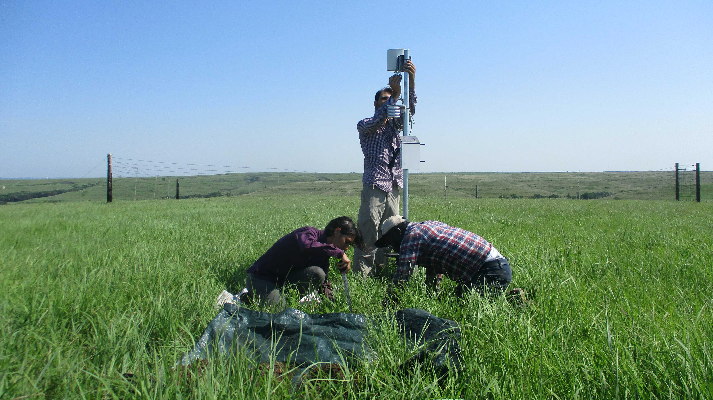

A long-term, multi-depth soil monitoring network within the Kings Creek watershed at the Konza Prairie Biological Station.

All 16 stations are distributed across the Kings Creek watershed within the Konza Prairie Biological Station.
All 16 stations are equipped with Meter Teros 12 sensors at 5, 20, and 40 cm depth, recording volumetric water content, soil temperature, and bulk electrical conductivity. Dataloggers are Meter ZL6 units transmitting data hourly. The network became operational on July 1, 2021 and continues to run today.
From July 2021 through November 2025, stations also recorded atmospheric variables. Thirteen stations used Atmos 14 sensors (precipitation, air temperature, relative humidity); three stations (3, 9, and 16) had Atmos 41 sensors which additionally provided solar radiation, wind speed, and wind direction.
Starting November 2025, all external atmospheric sensors were removed
to simplify datalogger shielding during prescribed burns. Soil monitoring continues
uninterrupted at all 16 stations. Internal logger temperature and atmospheric pressure
(inside the enclosure) continue to be recorded. Weather data from the
Kansas Mesonet Ashland Bottoms station is available in
mesonet_data/.
Vegetation data is also provided through Sentinel-2 NDVI at 10-m resolution
(COPERNICUS/S2_SR_HARMONIZED), retaining only cloud-free dates.
Streamflow is available from USGS gauge 06879650 (Kings Creek near
Manhattan, KS). Terrain rasters were derived from USGS/3DEP/10m.
All tabular data are CSV with hourly resolution. Raster data are GeoTIFF. The watershed boundary is a GeoJSON file (EPSG:4326, 2D) compatible with Google Earth Engine and standard mapping libraries.
| Folder / File | Contents | Format | Coverage |
|---|---|---|---|
| soil_data/ | Hourly VWC, soil temperature, and EC at 5, 20 & 40 cm — all 16 stations | CSV | Jul 2021 – present |
| atm_data/ | Hourly precipitation, air temperature, RH (all stations); solar radiation, wind speed & direction (3 stations with Atmos 41) | CSV | Jul 2021 – Oct 2025 |
| mesonet_data/ | Kansas Mesonet reference stations. Currently includes Ashland Bottoms (hourly precipitation, air temperature, RH, wind speed & direction, solar radiation) | CSV | Jul 2021 – present |
| vegetation_data/ | Sentinel-2 NDVI time series at each station location (cloud-free dates only) | CSV | Jul 2021 – present |
| ndvi_maps/ | Sentinel-2 NDVI rasters at 10-m resolution (~150 dates, <5% cloud cover over watershed) | GeoTIFF | Jul 2021 – present |
| streamflow_data/ | 15-min discharge from USGS gauge 06879650 — Kings Creek near Manhattan, KS | CSV | Jul 2021 – present |
| elevations_data/ | Elevation, slope, and aspect at 10-m resolution (USGS 3DEP) | GeoTIFF | Static |
| images_data/ | Field photos (N/E/S/W) collected during maintenance visits for each station | JPG/PNG | Various |
| raw_data/ | Original datalogger files (~500 MB). Not included in the GitHub repository. | CSV | Jul 2021 – present |
| stations_metadata.csv | Station name, coordinates, altitude, watershed, and logger serial number | CSV | — |
| kings_creek_boundary.geojson | Watershed boundary polygon (GEE-compatible, EPSG:4326) | GeoJSON | — |
Hourly soil data fetched directly from the repository. Select a station and variable to explore.
Loading data...